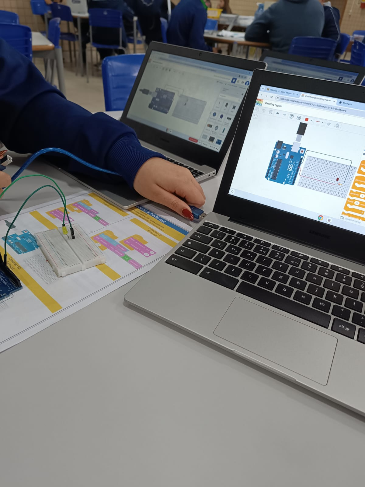
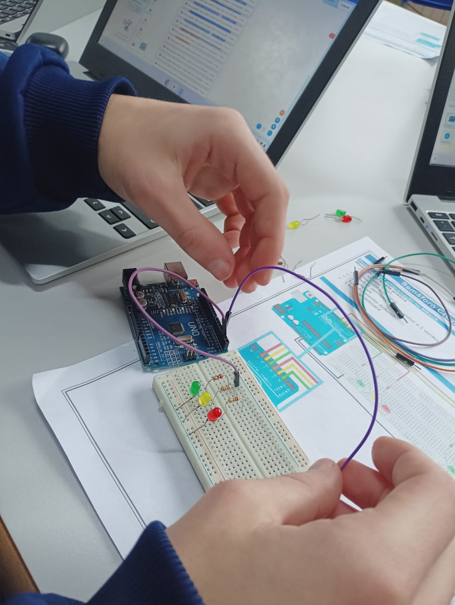

Conceito Teórico e Contexto
O glaucoma é uma neuropatia óptica progressiva caracterizada pela lesão irreversível do nervo óptico, frequentemente relacionada ao aumento da pressão intraocular (PIO). Por ser assintomático em suas fases iniciais, o diagnóstico precoce é o único meio eficaz de prevenção da cegueira.
No âmbito da Tecnociência, avanços em visão computacional, inteligência artificial e micro-robótica vêm transformando a oftalmologia. Sistemas automatizados analisam exames de imagem da retina (como OCT) em segundos, auxiliando especialistas a detectar microalterações estruturais antes do surgimento dos primeiros sintomas.
Dados e Estatísticas Atualizadas
- Global: A Organização Mundial da Saúde (OMS) estima mais de 80 milhões de casos de glaucoma no mundo.
- Subdiagnóstico: Cerca de 50% dos portadores da doença não sabem que a possuem devido à ausência de dor inicial.
- Precisão Tecnológica: Algoritmos de Deep Learning atingem taxas de acurácia acima de 92% na triagem do nervo óptico.
Fontes de Pesquisa Utilizadas
Aplicação Prática: Nossas Aulas de Robótica
Registro dos protótipos e experimentos desenvolvidos durante as aulas práticas de Robótica e Programação.

Montagem de Sensores
Testes de calibragem com sensores ultrassônicos e de luminosidade para simular medições automáticas de pressão e distância.

Programação do Circuito
Desenvolvimento do código em C++/Python para leitura de dados e comunicação em tempo real com a interface web.
Flashcards Interativos: Mitos, Fatos e Tecnologias
Clique em qualquer card para girá-lo e ver a resposta no verso!
Mito ou Verdade?
O glaucoma sempre causa dor nos olhos no início.
MITO!
A forma mais comum (ângulo aberto) é silenciosa, progressiva e não apresenta dor ou sintomas visíveis nas fases iniciais.
Inovação Tecnológica
Como a Inteligência Artificial auxilia no diagnóstico?
Algoritmos de visão computacional processam exames de retinografia e OCT em segundos, identificando padrões de escavação do nervo óptico.
Mito ou Verdade?
A perda de visão causada pelo glaucoma é reversível.
MITO!
O dano ao nervo óptico é irreversível. O tratamento com colírios, laser ou cirurgia visa conter a progressão da doença.
Conceito Científico
O que é a Pressão Intraocular (PIO)?
É a pressão do líquido (humor aquoso) dentro do olho. Quando o escoamento desse líquido falha, o aumento da PIO danifica as fibras ópticas.
Robótica Aplicada
Qual a função das lentes inteligentes vestíveis?
São dispositivos equipados com microssensores capazes de monitorar as variações da pressão ocular continuamente por 24 horas.
Mito ou Verdade?
Apenas pessoas idosas podem ter glaucoma.
MITO!
Apesar de ser mais predominante em adultos acima de 40 anos, existem diagnósticos de glaucoma congênito e juvenil.